That Damn Goat
Professional
May 2021 - Present
Level designs and art for a chaotic 4 player party game, devloped at MAGIC Spell Studios at RIT.
Headbang Hospital
Academic/Personal
Sep - Dec 2021
A fanart-environment built with Unreal 5 and Blender based on Velan Studio's "Knockout City".

Cursed Cove
Professional
Apr - Oct 2018
A Team Fortress 2 map developed by a team of 12, bought and featured by Valve Software in the Halloween 2018 event.
Scarlet Meadow
Academic/Personal
Feb - May 2020
A 2D platformer, beat-em-up with hand-drawn animation and a custom level editor tool, all built in C# and Monogame.

Future Fitness
Academic/Personal
Oct - Dec 2020
A 3D modeled, artistic environment design project built using Maya and Unity.

The Urban Underdog
Academic/Personal
Nov - Dec 2020
My own 3D graphics engine, randomly generated racetracks, and more in this browser based racing game developed entirely in Javascript!
Queen Elizabeth III in "A Royal Pain in the Arse"
Personal
Feb - Apr 2018
Traditional, hand-drawn animated characters brought into a Team Fortress 2 map as a boss fight.
Neon Pong
Academic/Personal
Apr - May 2019
A side-scrolling, back-and-forth, singleplayer fighting game developed using Java, built-in Java libraries, and hand-drawn animation.
Neon Heights
Personal
Feb 2019 - Current
A local and online multiplayer game currently being developed in Unity.
"Electra is Powered Up"
, Digital, Jan 2021
"Fall Guys Happy Holidays Fan Animation"
, Hand-drawn and digital, Dec 2020"2019 Sketch Collage"
, Pencil converted to digital, 2019
"Cartoons in the City"
, Gouache, May 2018
"Fruitful of Flavor"
, Oil, Dec 2017"Pepper and Olive Oil"
, Pencil, Dec 2017"Almonds in a Jar"
, Pencil, Dec 2017
"Imperfect City"
, Pen and Ink, Jan 2018"Steam City"
, Red Pen, Oct 2018
"Epic Space Monkeys"
, Pencil drawing, digital painting, Nov 2019"Jet from Lethal League Blaze"
, Pencil drawing, digital painting, Aug 2019That Damn Goat
Professional
May 2021 - Present
Level designs and art for a chaotic 4 player party game, devloped at MAGIC Spell Studios at RIT.
Headbang Hospital
Academic/Personal
Sep - Dec 2021
A fanart-environment built with Unreal 5 and Blender based on Velan Studio's "Knockout City".
Cursed Cove
Professional
Apr - Oct 2018
A Team Fortress 2 map developed by a team of 12, bought and featured by Valve Software in the Halloween 2018 event.
Future Fitness
Academic/Personal
Oct - Dec 2020
A 3D modeled, artistic environment design project built using Maya and Unity.

Pl Loco
Nov 2018 - Current
An experiment with very angular geometry, crazy heights/platforming, winding pathways, and a big city aesthetic in Team Fortress 2. The map reached a playable alpha state in January, 2021.
Vsh Falling Water
July - Aug 2018
An interpretation of Frank Lloyd Wright's "Falling Water" house design, built for the asymmetrical, arena gamemode "Versus Saxton Hale." A minimal amount materials were used for simplicity, stylization, and optimization.

Koth TF2Craps (Queen Elizabeth III)
Feb - Apr 2018
A symmetrical, King of the Hill map that features a hand-drawn animated boss fight in the center of the map. The layout was designed with the boss' moveset in mind. Read more about the boss
De Chug
Dec 2017 - Current
A Counter Strike: Global Offensive map with wacky angles and more complicated routes and sites than normal maps. For instance, the B site is stacked, meaning players can plant on the top or bottom, which I have not seen done for a bombsite before. The map is playable and I work on it whenever my friends and I feel like playtesting it.
MvM Havana
May - July 2017
Collaboration with Jess "Muddy" Dabbs, a Team Fortress 2 map set in Havana, Cuba. Players must fight off waves of invading robots. We wanted to see how Cuban architecture could fit into the TF2 art style.

De Tuggernaug
Dec 2016
A Counter Strike: Global Offensive map with experimental height differences and a stretched layout. The overall design is very thin and elongated on one axis. The name is like "Juggernaut" but spelled wrong and with the first and last letters swapped. People thought it was funny so it stuck.
That Damn Goat - Level Design and Art
Professional, May 2021 - Present
That Damn Goat is 4 player, chaotic party game developed at MAGIC Spell Studios at RIT, and is planned to be released on the Nintendo Switch and PC. In the game, 4 players run around a 3D space and try to grab a crown, and hold onto it for as long as possible. Players can be 1 of 12 different characters, each with their own unique abilities and playstyles, and there is an omnipresent AI controlled goat that will knock players around, change the state of the game, change which character a player is, etc. The game currently has 8 unique maps that are randomly picked from, and the goal is to have enough maps so each one can be a character's unique home area (such as a viking village map for the viking character).

Inspiration and Size
When I joined the development team, there were no real level designs made for the project, so I needed to experiment a lot to figure out what would work for the game. The maps needed to be complex enough to be replayable, but also simple enough so new players at a party could jump right in and enjoy. The project leads wanted unique levels that felt weird, as if they could not have been from any other game. I decided to take inspiration from previous level designs I had done which used oblique, organic angles for the geometry, rather than square, grid like structures.
The maps are designed almost like a circle, where players would naturally go around the outer edge of the map to chase other players and look for items, and go in and out of the center of the map to evade other players and grab the crown from its spawn point. This was inspired by other tag-like games and circular maps such as Royale Fumble from Fall Guys, Mario Chase from Nintendo Land, and Galaxy Burger from Knockout City. I also kept the maps around the same size, 56x56 units in Unity, only going larger or smaller if a specific map's design concept was to be that size. This 56x56 size was decided after playtesting many sizes, and it keeps players close together and almost constantly engaging with each other.
The first map I designed, meant to be a partially indoor "close quarters" map, is not designed for any specific character. This map features multiple layers, and feels like a deathmatch level in Quake. We found that not only was the level too big horzizontally, but the stacked layers made the level feel exponentially larger.
Designing for Flow
Another big design concept used in these levels is the idea of flow. Basically, players should never have to struggle through the maps, they should be able to hold forward on the control stick, easily get to anywhere in the map, and not get stuck on any geometry. With the players only having a control stick on a gamepad to control the camera, it was also important that they wouldn't be required to make any big rotations to face the right way. This was difficult to design around, as most of my 3D level design experience is in games with first person camera controlled with a mouse, which is much more precise input method for camera control. By designing for flow, however, I could design the maps for maximum comfort and usability by players. The best map that shows this is the Viking Village map, which has pathways that constantly loop to one another, so the players were never going "the wrong way." I also added invisible barriers to all the maps, which fade in when players get close, as falling off and getting put back on the map constantly broke players' flow.
 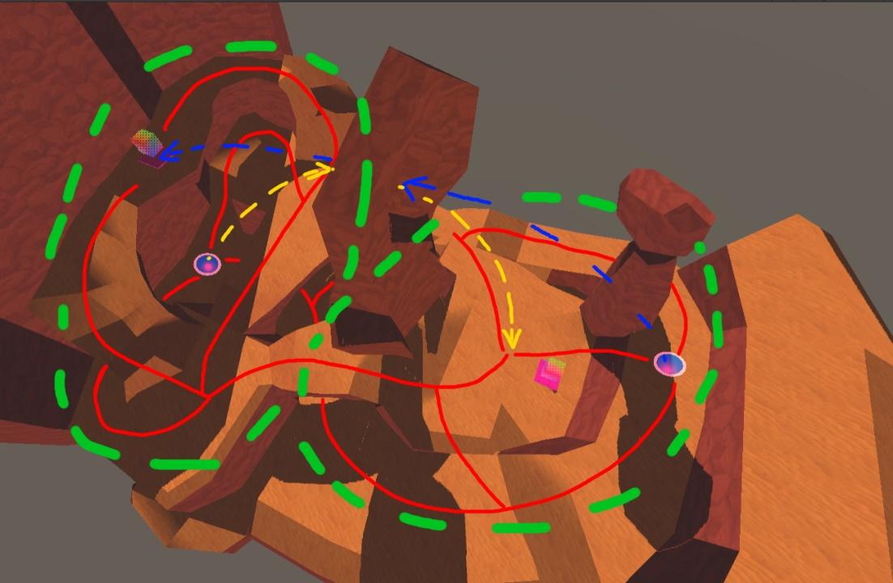
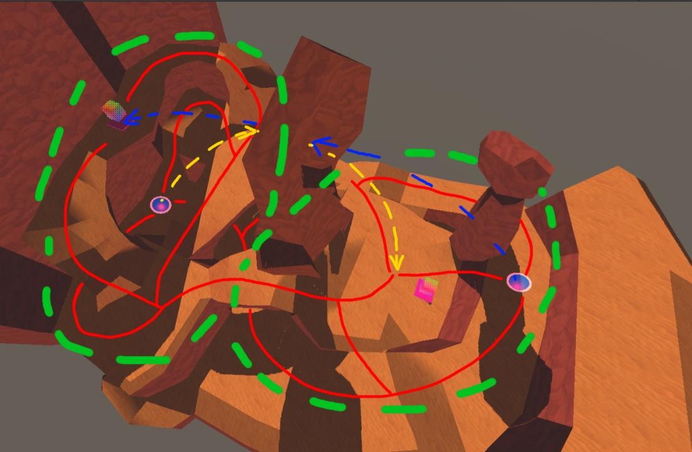
In these images of the Viking Village and Crusty Canyon maps, I marked the main walking pathways with red, marked jump-pad arcs in blue/yellow, and outlined the overall circular shapes in green dashed lines. The red paths constantly branch off and connect to one another, so players always have options for where to go, and this doesn't even include the options players have with height by jumping on and off ledges. In the Viking Village, there are 2 circular shapes formed by the paths, with one circle smaller and inide the other. In the Crusty Canyon, the circles are side by side, like a figure 8.
Pipeline and Art
The maps were all built using Probuilder in Unity. They were built as crude greyboxes, and the specific features of each level were inspired by concept art and turned into gameplay spaces. For example, I was given concept art of a desert with tall rock structures for the Crusty Canyon map, which I then turned into a large, central rock with a hole in it, and I positioned jump-pads that would launch players through the hole to the other side of the map. The greyboxes were temporarily given textures from various asset packs. Our goal is to get a vertical slice of the game done soon, which requires one map to be finished with final art assets. We are art-passing the Viking Village map because it has the most finalized gameplay design. After being given concept art of what each grey box structure should look like with final art, I modeled parts of the map in Blender. The goal is to get feedback from the leads, apply that feedback to the models, then apply texture maps given from the sculptors and 2D artists on the team onto the models by UVing them to fit.
This is the quick, first translation of concept art to model. Specific pieces like the dragon-looking decoration on the roof will be sculpted by team members in the future. This model is still work in progress, so topology and optimization is not final.
The Current Results
These are the current greyboxes of each playable map in the game.
Close Quarters and Viking Village.
 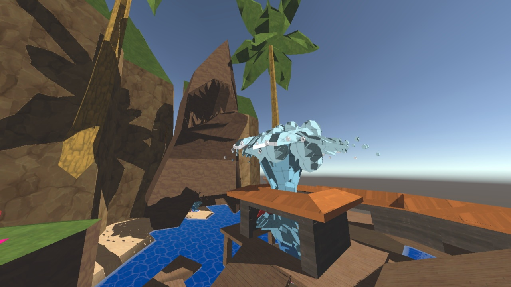
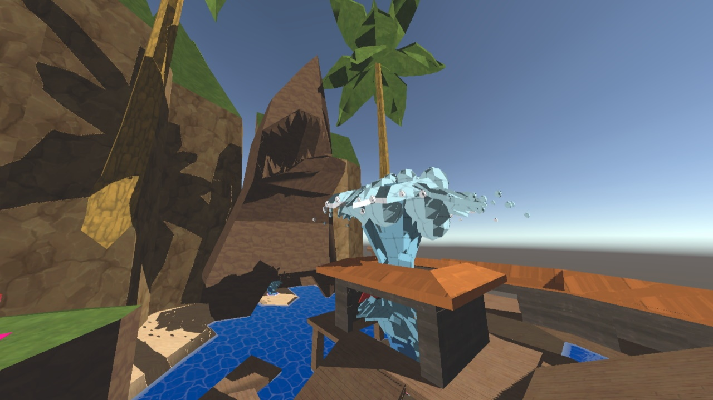
Jungle Heights and Water Party.


Crusty Canyon and Skater Station.


Desert Dunes and Ratsle Siege.
Headbang Hospital/"The Devil's Cove"
Academic/Personal, Sep - Dec 2021
An artistic environment built using Blender and Unreal 5. In this project, I created trim sheets and modular assets to build a lively city in Epic Games' Unreal 5 engine. The style for the city was inspired by Velan Studio's game "Knockout City" (KO City) and its "future fifties" aesthetic, as I call it. As the project developed, I ended up turning the whole thing into a fan-art piece for KO City about a fanmade part of the city known as The Devil's Cove, the name of which I based off of a song in the KO City Soundtrack. It features the environment, my own lore for the environment, and a fanmade message from the game's DJ narrator, which my friend Kieran Newell recorded an impression of for the project. In this project I focused more on the artistic and narrative side of an environment, rather than the gameplay design of a level.
Textures and Trim Sheets
I started the project by grabbing tons of screenshots of The Hideout in KO City. KO City's aesthetic features bright red bricks, and bold, warm lighting which reflects off of different metalic, stone, and brick materials. I wanted to interpret this style into my project, so I started by making a simple brick texture. I payed extra attention to the various shapes of the bricks in game, as some of the bricks have oblique edges to give them a more cartoonish, stylized look. I also made a trim sheet of various brick, concrete, and metal patterns. Corresponding normal, roughness, and metalness maps were also made for these materials. These texture maps were all hand drawn using Krita and its wrap around view mode so I could make the textures tile correctly.

 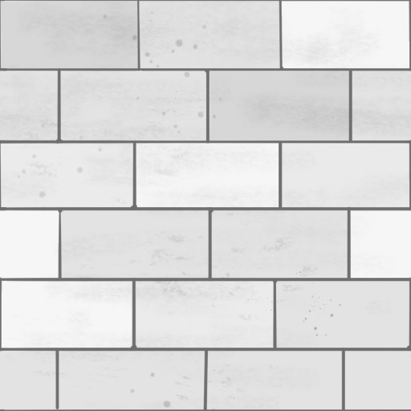
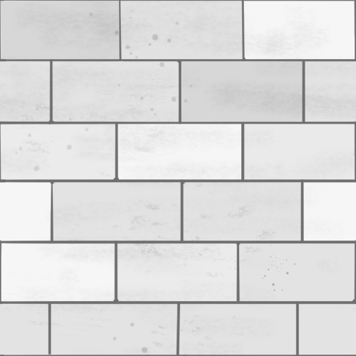

From left to right, top to bottom: Brick texture, Brick/Concrete/Metal Trim Sheet, Concrete texture, and Graffiti texture.
Modular Facades and Buildings
Using Blender, I modeled different building assets such as facades, corners, and roofs. I UV'd these to utilize the different textures I had made previously and I managed to get many different uses out of a small range of textures. Each building asset was made with interchangable textures in mind, so two buildings could use the same models, but have different colors giving them an entirely new look. I also applied a slight bevel to everything so the rims/edges of the models reflected the sunlight in the map.


Some of the modular facade pieces made for the map.
Making The Devil's Cove Feel Alive
In a previous project, Future Fitness, I scripted a simple traffic system so cars, trucks, predestrians, and monorail carts could drive along a set path, slow down and stop, and then accelerate back up again. Along with the ambient sounds of vehicles and city life, it made the entire city feel very alive. I felt this map needed a similar system, so using Unreal 5's blueprints, I made a system that would move cars along a spline path. KO City actually does this similarly in The Hideout, and it was a perfect way to tie the environment into KO City. I modeled out some low poly fifties flying cars based on KO City's crew vehicles, made LODs for them (along with all the other models in the map), and made the spline pathing system spawn the cars in with randomly colored paint jobs.

The low poly car model I made, and its wireframe version.
I also made various signs to decorate the buildings and blend the neon lit skyscrapers in with the more traditional brick and concrete structures. These signs utilize a holographic scanline material I created inspired by various hologram graphics in KO City. The most important sign is the one for Headbang Hospital, but there is many different signs for fictional businesses, and there is even a sign referencing my previous Future Fitness project. I also hung up some flags on the buildings, and I used their world space position to randomize their texture and used sine waves to animate them. All of these neon lights, holograms, and animated objects really made the city pop with color and life, and it all looks great using Unreal 5's Lumen lighting system.

The various neon/holographic signs I made for the map.
 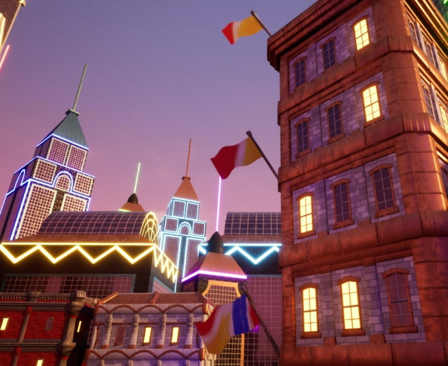
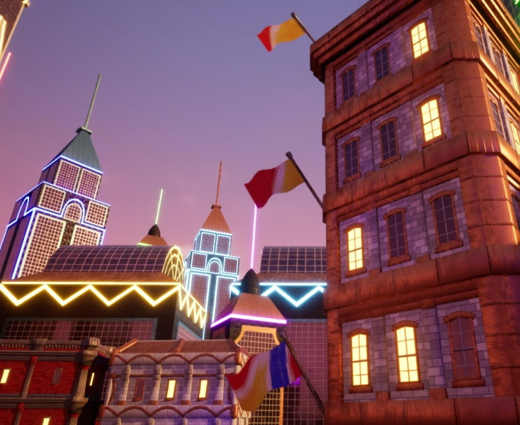
Flags blowing in the wind, animated using sine waves and having a randomized texture based on the world position of the prop.
The Result
I have recieved very positive feedback on this project from my professor and from the KO City community. With this project, I greatly improved my texturing, modeling, and lighting skills from my previous projects. The simple, modular assets I made were given lots of detail with my handpainted textures, and the warm lighting and animated assets made everything pop with color. I look forward to doing more projects in the future with bright, bold environments like this one.
Screenshots of the final environment. Click an image to see the high-res version.


Ambience sound effects are from Team Fortress 2 by Valve Software.
Brda LT Std font by Linotype GmbH.
Cursed Cove
Professional, April - October 2018
In a team of 12, I helped developed the map "Cursed Cove" for Valve Software's "Team Fortress 2". The map was bought and featured by Valve as a part of the Halloween "Scream Fortress" event in 2018. On the team, I contributed concepts for the level design, and I developed parts of the background/skybox of the map. In the map, players must kill other players to collect their souls, and then must deliver those souls to Davy Jones' Locker.

Design Concepts
During pre-production of the map, I contributed ideas for possible building shapes, locations on the map, and gameplay concepts. In order to create the feeling of a "bustling pirate bay" our buildings were made very tall with lots of cramped, narrow alleyways in between.


Design sketches of possible gameplay areas, and early art style and texture palette developement.
Background and Skybox Detailing
When the playable area of the map was nearly complete, some teammates and I started working on the out-of-bounds areas. While the playable area was symmetrical between the two teams, RED and BLU, the out-of-bounds areas would be asymmetrical to appear more visually interesting. I helped develop the jungle/forest area behind RED's base, as well as the cobble fortress behind BLU's base. This perfectly blended Team Fortress 2's tropes of RED using lots of natural, wooden materials, and BLU using lots of industrial materials for their bases with an old-timey pirate theme. While much of BLU's fortress was scrapped in the final product due to optimization concerns, it still helped us understand the visual style were we aiming for.
 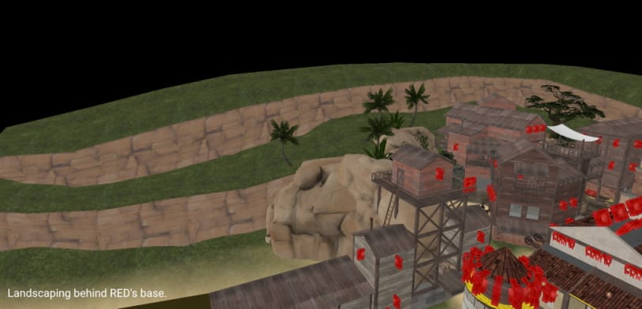
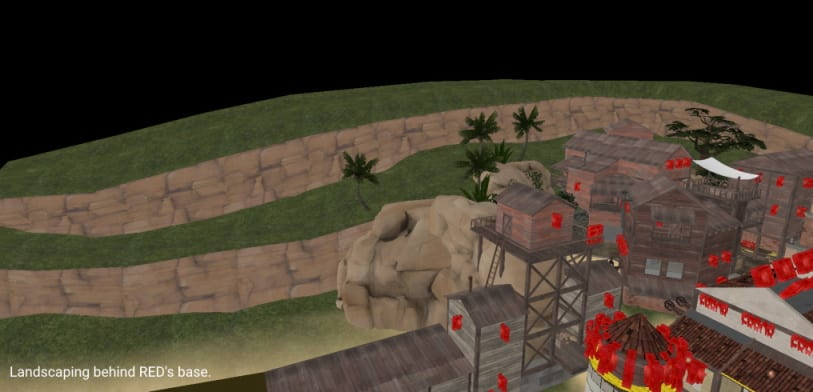
 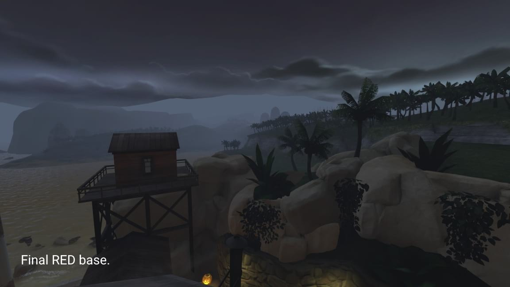
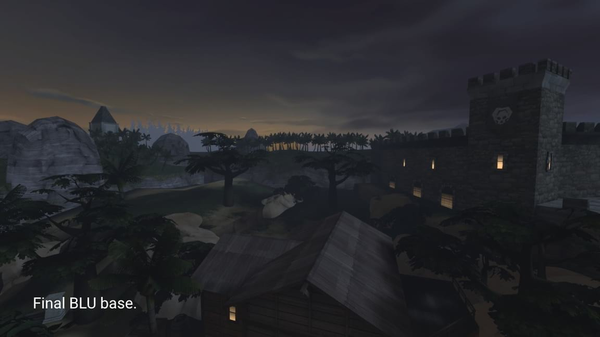
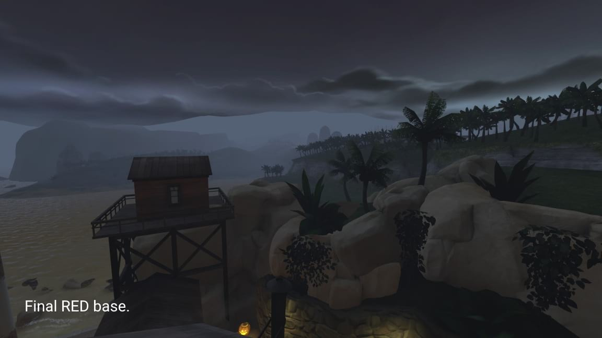
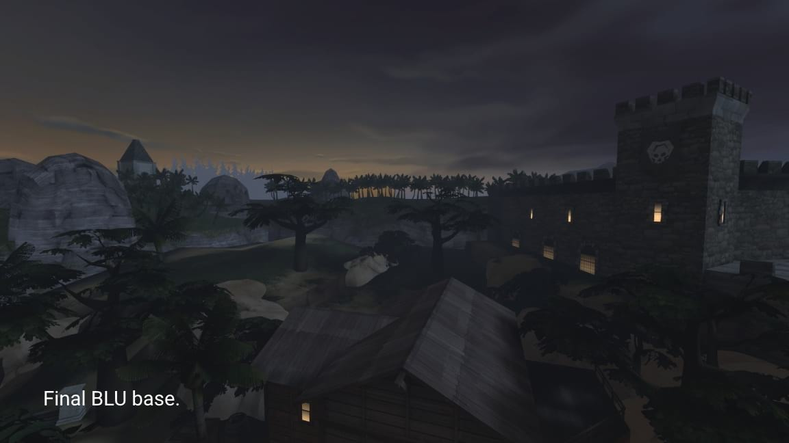
Early versions of the skybox, and the final versions of the skybox.
The Result
Watch the trailer and view the map on the Steam Workshop! The map is also available to play on official Team Fortress 2 servers every year during the Halloween event!
Scarlet Meadow
Academic/Personal, February - May 2020
Scarlet Meadow is a 2D platformer, beat-em-up game with traditional, hand-drawn animation, developed in C# and Monogame. I worked with a team as the lead artist, but I also developed the physics system for objects in the game, enemy behavior, UI elements, and I designed and developed a robust, graphical level editor used for content production for the game. The game features traditional, hand-drawn animation with inspiration from comic books and Cuban architecture.
Physics and Interactivity
Many of the elements of Scarlet Meadow are physically interactive, meaning that a robust physics system that also responded well to the player's inputs was needed. I developed a physics system that has velocity, air resistance, and collision detection using axis-aligned bounding boxes. The collisions could be customized to be solid, semi-solid (meaning a platform the player can jump through), or triggers for certain events. In terms of interactive elements, I developed ziplines, trampolines, Scarlet's lasso attack which shoots out a lasso that grabs onto anything it touches and then comes straight back to the player, enemy behavior, linear and bouncy projectiles, collectible items, stage objectives, and much more.
The Scarlet Editor and Level Design Pipeline
"Scarlet Meadow" features 16 unique levels all designed by me. Each level only takes about 2-3 minutes to complete, but they are tough, meaning that new players will be retrying each one until they master them all. In order to build all 16 levels, a powerful level editor tool was needed. Inspired by Valve Softwares "Hammer Editor" and Super Mario Makers "Course Editor", "The Scarlet Editor" gives the user full control of their levels, letting them paint tiles of collision data, place props, enemies, items, and change properties of the level such as the background or level objective. The editor also has some quality of life features, such as being able to zoom in and out with the scroll wheel, pan around by clicking and dragging, and more. Stages are stored in ".scar" (Scarlet) files, which, when directly loaded into the game, will optimize the collision mesh and let the user play their level. I developed all of these systems in about 3 weeks.
Traditional, Hand-Drawn Animation with Comic Book Flare
I conceptualized and originally designed the Scarlet Meadow character back in 2017, but as my own art style has changed and improved since then, so has the design of the character. For use in this full game, I fleshed out the overall world by adding more characters, such as Scarlet's friend Cocoa Cavero, the cactus civilians, and enemies like the Lawmakers and Robberbarons. All of the characters for this game are hand-drawn and inked on physical paper, and then scanned in to be colored digitally. This method gives the animation its hand-drawn charm, but the actual style, inpired by pop art, street art, and comic books, is angular, colorful, and bold. As with my previous project, "Neon Pong", I applied a halftone filter to everything, which was a quick and affordable way to give some much needed texture and comic book flare to the otherwise flat graphics.
"Curbana" and Environmental Design
The game takes place in "Curbana", a fictional urban environment of skyscrapers mixed with colorful, Cuban inspired architecture. The props scattered throughout the levels are designed to give the levels a bit of depth in a 2D setting, while also making sure that characters, items, and interactive objects all share a bold, black outline that pops out to players' eyes.
The Result
The game is complete with 16 tricky levels, fun physics, and eye-catching graphics. You can watch the trailer and download the game and level editor below!
Download the game and level editor
Future Fitness
Academic/Personal, Oct - Dec 2020
An artistic environment/level design built using Maya and Unity. This project features all of the steps in creating and environment, from the initial greybox to the final build. This project features over 100 unique models and materials, all created by me. This was the first time I had used Unity's material and lighting system, but my knowledge of the Source Engine gave me a good foundation to start learning from. This was a solo project.

Greybox
I used primitives in Unity to develop the greybox for the environment. This gave me a good sense of where all my objects should be in the environment, as well as what objects I will need and how big they will be. I also scripted a traffic system so that the game automatically fills the city with trucks, cars, vans, buses, pedestrians, and monorail carts and moves them along paths to give the city some life.
Details and Modular Design
I then created models inside Maya that had more detail. Once these were built and UVed, I imported them into Unity and replaced the primitves with the more detailed models. For the city scape, I created different building "facade" models, and used them to construct different types of buildings. This modular design made all of the buildings fit the same visual style, and made it so I did not have to create tons of large, unique building models each with their own details.


The Result
I then created textures and materials for all of the objects, this was my first time creating my own normal maps and messing with the metallic properties of materials. Finally, I built reflection probes, baked lighting, created my own skybox texture, added ambience sound effects (I used sounds from Team Fortress 2), and added some post processing effects to make the city's colors pop!


Ambience sound effects are from Team Fortress 2 by Valve Software.
Delirium font by The Fontry.
The Urban Underdog
Academic/Personal, Nov - Dec 2020
Put your pedal to the metal as "The Urban Underdog" and race for your best time on randomly generated racetracks in this fast-paced, 3D driving game!
The game runs in a browser and is built entirely in Javascript. Using vector, matrix, and projection mathematics I was able to develop my own 3D graphics rendering engine with a fully dynamic camera. Features include: a free moving and rotating camera with adjustable field of view, rasterization of meshes onto the display, back-face-culling, and depth buffering. The game utilizes PixiJS to render the pixels of the 3D graphics and the UI elements such as text. It also uses Howler to play music and sound effects. This project was done solo.
Start your Engine
As The Urban Underdog, you can customize your car color to any color you want (this gets saved by the browser). Your goal is to go for your best time on randomly generated racetracks. If you find a racetrack you like, you can copy a code for the track, save it somewhere or send it to a friend, and input it back into the game to regenerate that track. Because these track codes are just coordinates for vertices on the track, dedicated users could theoritically write their own codes and build their own custom tracks! To generate random tracks, I loosely followed Gustavo Maciel's article: "Generating Procedural Racetracks". To learn about this more in-depth, watch the video at the bottom of this page, or view the development documention at the bottom of this page.
Drift Design
Implementing driving physics that can work on randomly generated racetracks was a very tough challenge. Early prototypes had very sensitive steering that let the user turn around sharp corners, and drifting made this sensitivity even higher. From player feedback, I halved the base steering sensivity multiple times, and made drifting increase steering sensitivity as wheel as the car's max speed and acceleration depending on how far you were turning.
This solved multiple problems with the game's design: for one, players now had the ability to smoothly steer on more straight parts of the track, while also steering very sharply on tight corners by drifting. It also made entire races much more dynamic, as more experienced players could string together multiple drifts on straightways and take the advantage of the increased max speed to save time. One poorly placed drift, however, could send the car straight into a wall, creating a very interesting risk vs reward design.
The Result
You can play the game straight on your browser, no downloads required:
I also have a page that delves deeper into the development process and shows some behind the scenes screenshots and features:
View development documentation
I have also made a video demo for the project that explains concepts such as 3D projections, barycentric coordinates, rasterization, and randomly generated racetracks, all shown with hand-drawn diagrams:
Music used in-game: "Everybody Falls" and "Final Fall" from Fall Guys:
Ultimate Knockout
Sound Effects from: Fall Guys: Ultimate Knockout and Half-Life 2
Goldman font by Jaikishan Patel, obtained through Google.
Queen Elizabeth III in "A Royal Pain in the Arse"
Personal, February - April 2018
A Team Fortress 2 map that makes players fight against my own 1930's style animated characters, play minigames for power-ups, and take control of the center control point, all released on April Fools as a "joke styled map". I was inspired by Studio MDHR's 2017 game, "Cuphead", with its own 1930's aesthetics and jazz soundtrack. This was the first time I had done a large scale project based on hand-drawn animation. This project was done solo.
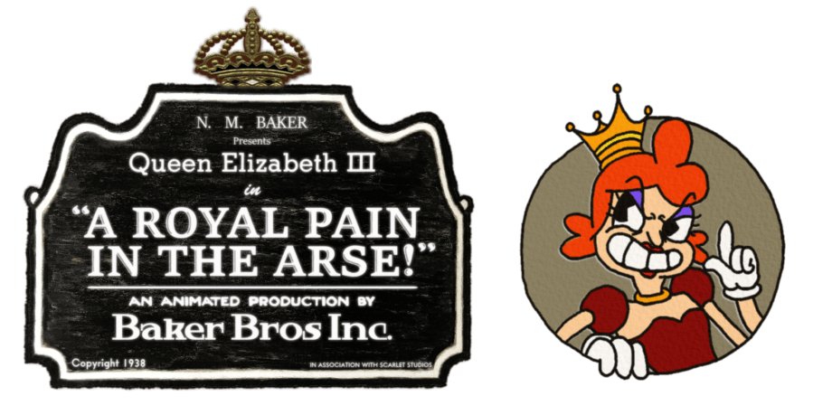
A New, Old-Timey, Concept
No one had really done a map with hand-drawn animated characters before, at least not to the same scope that I was going to attempt, meaning I was on my own to figure out how it should work. With hard limits on how much I could push the Source Engine to my will, I brainstormed many ideas on how to accomplish my goal. I thought of using 3D models with animated textures, but that was beyond my skillset at the time. I also thought of having tons of brushes, each one with a single frame of animation textured on it, that would flicker on and off in a sequence, but that would be wildly inefficient. I finally decided to utilize particle systems, as they are literally meant for putting 2D sprites in a 3D environment, and they gave me a huge range of customizability.
The first test had some flickering issues, so to fix this I just duplicated the animation. Overall, using the particle system was a very cheap and easy way to display the animations in the map, and it also meant I could make the character always face the player's viewpoint, making the character look very evil.
After that first in-game test, I saw the potential of the idea, and I knew I had something special.
The Hand-Drawn Process
The design of the queen is based on many actual queens in history, such as William Scrotts' painting of Elizabeth I, a young Queen Victoria, and various Halloween costumes of queens I found on Google. I was a big fan of the warm tones used in the clothing, and decided to give her a red and gold color palette. Her actual visual design is loosely based off of how I would think Americans in the 1930's would picture an evil English queen, but modernized a bit to fit today's standards.
In order to properly animate the queen, I bought a cheap light pad, some tracing paper, and I got to work. My process was to pencil draw each frame ("pencil test"), scan frames to digital images with a printer/scanner, insert the images into a video, look for issues in the animation, make any adjustments needed, and repeat until the movement was where I wanted it. I then trace over each frame on another sheet with .3 mm and .1mm PITT Artist Pens ("inking"), scan each frame again, and then color digitally with Paint.NET.
In total, the animation clocked in at about 80-90 frames, with there being about 160 drawings, as each frame had both a pencil and inked version. It was a long process that took about a month, but the final result was such a good imitation of the 1930's style. Many people who played the map did not realize that it was original animation with an original character. Some even thought that I ripped the animation straight from "Cuphead", which in my opinion means I did a pretty good job.

Concept art of the queen. Notice the old version of "Scarlet Meadow" in the top right of the first image. She later starred in her own game of the same name!
That's Not All, Folks
As a map developed for an April Fools celebration, it has plenty more to offer than just the boss fight. The map is filled to the brim with minigames, jokes, references, and all sorts of fun little knick knacks. While the boss fight was the main focus, these smaller moments are what support the map, and they made sure the in game voice chat was filled with bursts of laughter.

A look at just some of the map logic/entities used for the queen boss fight and minigames. I really tried to stay organized by categorizing things into columns.
The Result
On April 10th, 2018 I woke up to a surprise message from popular YouTuber, RTGame Daniel, saying he was releasing a video about my map. Since then, RTGame Daniel has amassed an enormous following on YouTube and Twitch, and the small success of my map has encouraged me to keep going until I stumble upon my next great idea. I am very appreciative of RTGame, his community, and the opportunities they opened up for me. You can watch his video, which shows the map in good detail, below.
Queen Elizabeth III was the first time I had done a large scale project based on hand-drawn animation, and those techniques and skills can be seen influencing my future projects such as Neon Pong and Scarlet Meadow.

Neon Pong
Academic/Personal, April - May 2019
A side-scrolling, singleplayer game where you return attacks from a "Pong" based enemy in urban environments. I developed the game with a partner using Java and its built-in libraries. The game features traditional, hand-drawn animation and a bold comic book style made by me. Neon Pong had a very quick development cycle and some technical hurdles, which affected all aspects of the project.

A Dynamic Take on an Old Classic
In Neon Pong, your goal is to win a Pong game, but this time you control a physical character rather than a simple bar/paddle. Everytime you hit the ball, its speed increases and you built up a special meter. The game required physics, precise movement, and fast graphics. My partner and I started by developing a simple update-render cycle that took advantage of multiple threads to display graphics. The game needed to run at a frame rate of at least 30-60 frames per second, and it needed to do this on the school computers. Due to this, the game's resolution is locked at 720p, and it limits how many images we can render at once.
I then developed the physics and collisions systems, which were not as optimized as they could have been, as the collisions used a lot of "pixel perfect" calculations for basic rectangle hitboxes. Of course, after the fact we realize we should have used the more efficient Axis-Aligned Bounding Box collisions, which I do use in later projects. I also developed an external "Animation Viewer" tool in Java that lets me add images to an animation as frames, customize their order, and dynamically adjust the speed of the animations. This let me quickly scan pencil tests and immediately load them into the tool to find and fix any janky movement. It also allowed me to fine-tune the speed of the animation so they could go directly into the game.
Hand-Drawn Animation with Comic Book Inspiration
With this game's very quick development cycle, I had to cut some corners on the animation. The longest hand-drawn animations were the run cycles, clocking in at only 6 frames each (not including the electric-shock effect, which is 20 frames but was done digitally). All other animations were just 1 frame poses. This made all of the movement feel very snappy, but that actually meshed really well with the fast, precise gameplay. I also applied a halftone filter to everything, which was a really cheap and effective method to add some much needed texture to otherwise flat drawings, and it made everything look like it came straight from a comic book.


Detailed Backgrounds in a 2D Scene
While the animation was hand-drawn, I did not have time to draw or paint backgrounds, so I made
them by creating maps in Team Fortress 2. These were dioramas of sorts that were only seen from
one angle, and they were originally split up into layers for a parallax scrolling effect, but
this got cut due to optimization concerns. Using TF2 as a base let me quickly add lighting and
use premade assets, which gave the background detail in a very short timespan. I also
applied halftone filters here so they were mesh well with the animation.
 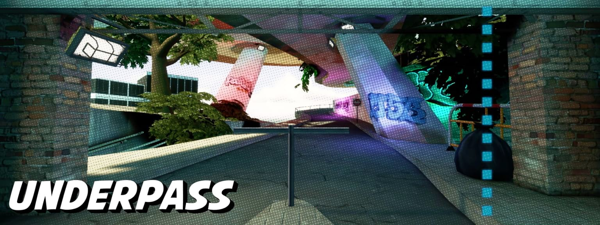
An animated version of the Underpass stage is used as the background for this site!
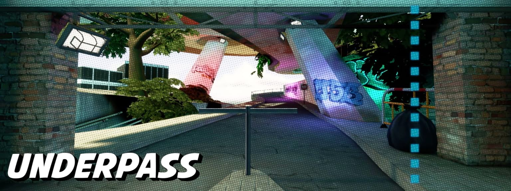
An animated version of the Underpass stage is used as the background for this site!
The Result
Compared to my other projects, Neon Pong is definitely smaller content wise. But being one of the first games that I built entirely from scratch, having such a small development cycle, and being one of the last major projects I did during my senior year of high school, it holds a special place in my heart. Our teacher gave us an immediate 100% on the graphics, but docked us a couple points on the game, as it was a little too fast and difficult for her. The characters of Neon Pong, Electra and Suit, will return as part of a much larger ensemble of characters in Neon Heights.
Neon Heights
Personal, February 2019 - Current
A local and online multiplayer game currently being developed in Unity. Two teams of four players pick between eight different unique characters to play in this intense Team Hand Ball inspired sport, but with more platforming, fighting, and teamwork. This project has gone through many prototypes, I have programmed menus and UI, local multiplayer, and game logic, and I have designed characters and environments for the project.
The Spark
Concepts for Neon Heights date back to November 2018, when I first designed the "Electra" character, which sparked the whole idea. Two teams try to get a ball in the other team's goal and intense back-and-forth gameplay ensues with movement systems that can be comboed together. Each character has a unique "fluorescent ability" that charges up based on passes made to teammates. These abilities can range from building defensive walls to flipping the gravity of the stage.
Besides the gameplay, I really want to focus on the characterization of the game. I want to design eight very special characters, rather than a hundred unmemorable ones. The game takes place in a variety of urban environments such as neon-lit rooftops and overgrown underpasses, but its all set in one city that reeks of inequality. The name "Neon Heights" is a pun off of "neon lights", but the "Heights" refers to not only the large skyscrapers of the city, but also the social differences between people in the city, like a social/financial hierarchy or totem pole. The teams are based around "Champions VS Underdogs", and while there are no gameplay differences between the teams, visually they will appear different, with the Champions repping a bright white, almost golden color scheme, and the Underdogs repping a darker, but more colorful color scheme.

Prototypes
I started developing prototypes on and off in my free time in Feburary 2019, and after a couple play tests with my friends at the end of 2019, it proves to be a fun concept that just needs some ironing out. In June 2020, my friend and I started working on an online multiplayer version using Mirror Networking, an open source networking system for Unity.
A prototype of the character and team select screen. Players can join the game by pressing A on their gamepad, and they can move their cursor around and make selections.

Concept art of Poppy the Popstar and Electra the Urban Underdog.